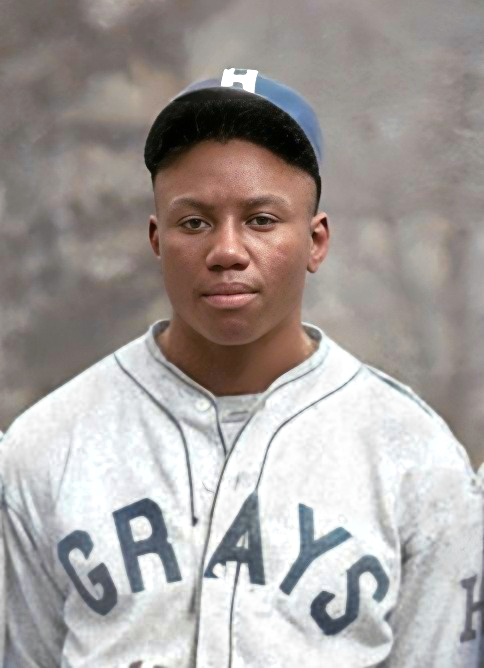

The season Gibson hit .466 — now the highest single-season batting average in Major League Baseball history. Handwritten on the original print: Cool Papa Bell, Josh Gibson, Ray Brown, Buck Leonard. Four Hall of Famers in one photograph, playing in a league that the record books pretended did not exist.
The records were always his. It took seventy-seven years for the books to say so.
The model never produces one career. It produces five hundred.
The ensemble is built in three stages. First, we construct a composite aging curve from six elite MLB catchers — Johnny Bench, Mike Piazza, Yogi Berra, Roy Campanella, Carlton Fisk, and Ivan Rodriguez — by normalizing each player's WAR-per-season to their career peak and averaging across all six.
Second, we estimate Gibson's peak WAR by taking his FiveThirtyEight WAR rate (40.2 WAR in 598 Negro Leagues games, or 10.1 WAR per 150 games) and applying a Negro Leagues–to–MLB translation factor drawn from Normal(0.85, 0.04). This factor is calibrated on crossover players who competed in both leagues.
Third, we generate 500 individual career trajectories by multiplying the aging curve by the translated peak WAR, adding season-to-season noise drawn from Normal(0, 1.2 WAR), and varying the career endpoint around age 38 ± 1.5 years. Each trajectory is one plausible career. The percentile bands are computed pointwise across all 500 trajectories at each age.
The uncertainty is the finding. A single projected career makes the injustice feel precise. The fan of 500 careers makes it feel true.